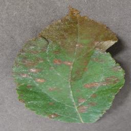

Doença: Cedar Rust
Espécie de planta: Maçã
Sobre a doença: A infecção fúngica, também conhecida como Gymnosporangium juniperi-virginianae, pode ser facilmente identificada pela aparecimento de manchas amarelas pálidas do tamanho de cabeças de alfinetes na superfície superior das folhas logo após a floração.